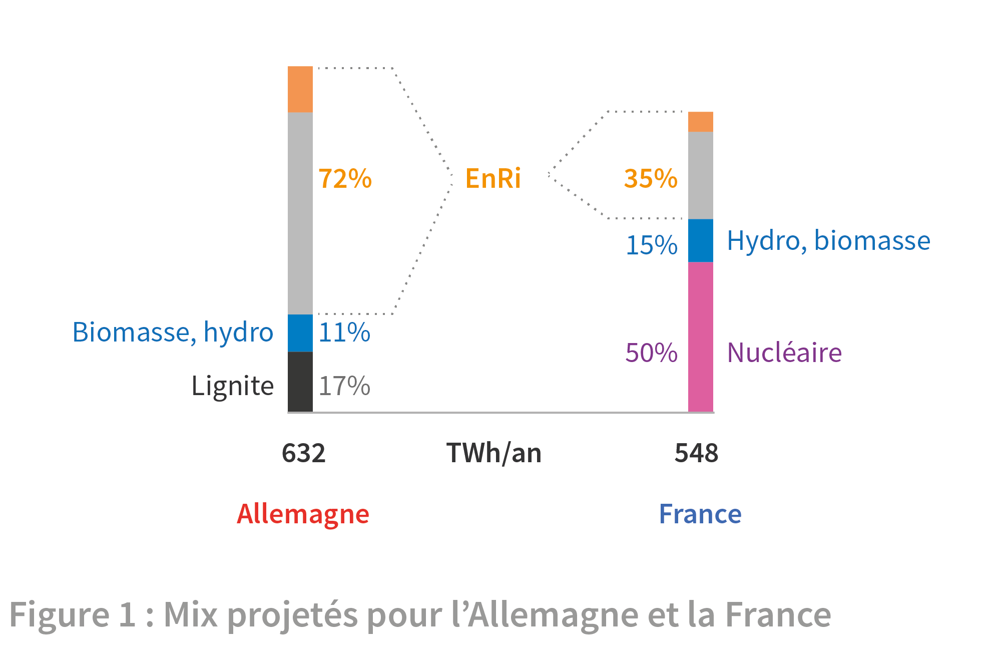
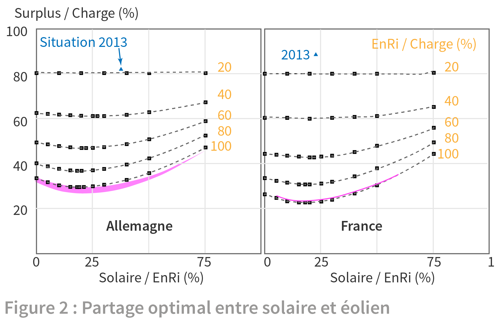
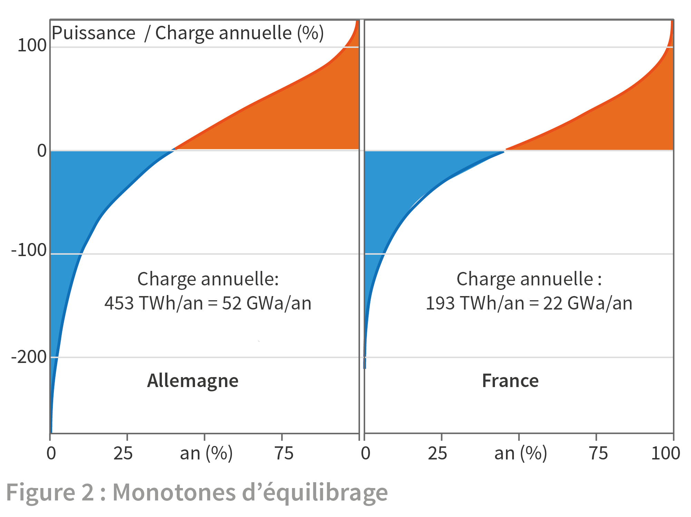
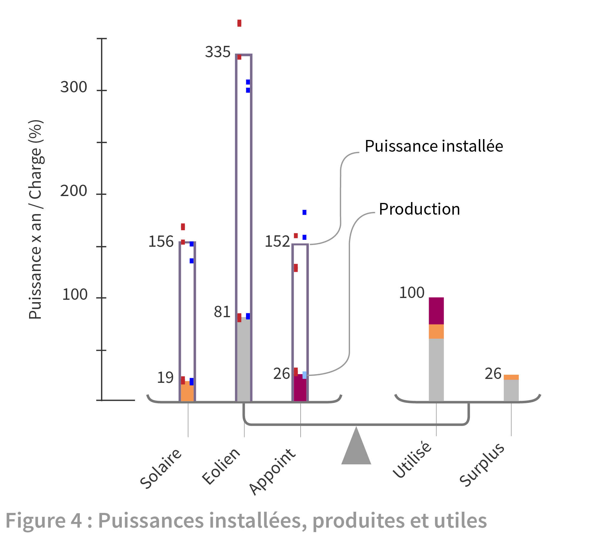
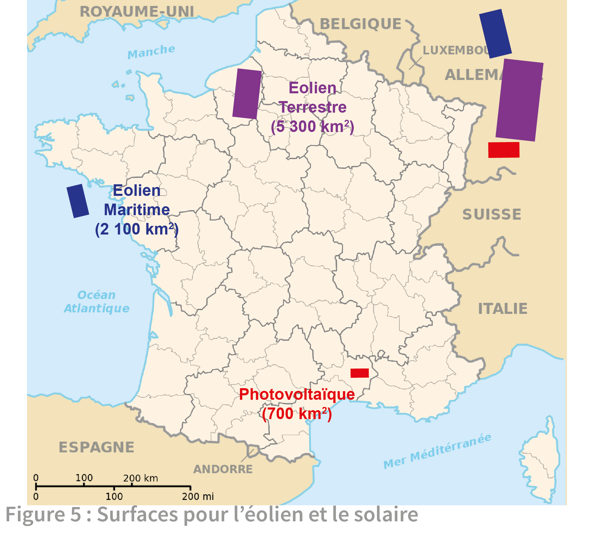

3. Electricité
L’article précédent a montré les conditions à remplir par le système d’équilibrage pour gérer l’intermittence en minimisant les pertes d’énergie. Il est parfois objecté que le tableau est noirci car établi à partir d’une situation de 2013 où il y a trop peu d’EnRi installées. Pour répondre à cette objection, nous ajoutons le cas de l’Allemagne qui présente en 2013 une production par EnRi bien supérieure à la France : plus du triple de la production éolienne et près de sept fois la production solaire.
Nous évaluons les conditions d’équilibrage dans la situation hypothétique où les deux pays auraient les mix indiqués par la figure 1 avec un pourcentage d’EnRi) de 72% pour l’Allemagne et 35% pour la France1.

Alors les EnRi devraient fournir 453 TWh en Allemagne et 193 TWh en France. Pour voir comment le système électrique fonctionnerait alors, on reprend la méthode proposée par F. Wagner :
1 La charge est obtenue en soustrayant à la consommation les autres productions des mix de la France et de l’Allemagne. Les quantités annuelles sont calées sur les objectifs du mix et les historiques sont déduits de ceux de 2013 en proportion.
2 Le solaire PV est supposé fournir un cinquième de la production totale des EnRi d’après l’optimisation indiquée ci-dessous.
3 Les historiques des puissances produites, en 2013, par l’éolien et le solaire sont multipliés par les facteurs constants qui permettent d’atteindre la cible des productions d’EnRi visées.
4 L’équilibrage corrige les EnRi pour atteindre la charge. La puissance de l’équilibrage est la différence de entre les historiques de la puissance requise par la charge et de la puissance des EnRi.
5 La monotone de l’équilibrage en est déduite par rangement suivant les valeurs croissantes de puissance.
La figure 2 indique le choix de la part optimale du PV pour l’Allemagne et la France. Il s’agit de minimiser l’énergie cumulée au cours de l’année par les surplus dus aux dépassements de la charge par les EnRi. En minimisant cette énergie, on épargne le système d’équilibrage.

Ce surplus est exprimé en pourcentage de la charge des EnRi (453 TWh pour l’Allemagne, 193 TWh pour la France) et mesuré suivant l’axe vertical. L’axe horizontal donne le pourcentage du solaire dans les EnRi. Les valeurs du surplus ont été calculées pour différentes valeurs de ce pourcentage pour donner les points portés dans les graphiques. La courbe la plus basse de chaque graphique, celle où les EnRi assurent 100% de la charge, montre un minimum pour un peu moins de 20% de PV dans le mix. C’est l’optimum qu’on retrouve aussi dans les courbes supérieures ou les EnRi ne couvrent qu’une partie de la charge (le reste serait alors produit par des productions pilotables).
Les monotones de la puissance d’équilibrage de l’Allemagne et de la France sont présentées sur la figure 3 pour cet optimum.

L’axe vertical donne la puissance produite mesurée en pourcentage de la puissance moyenne de la charge (la puissance constante donnant la charge annuelle). La monotone d’un pays range par ordre croissant les puissances prises à intervalle d’une demi-heure dans l’année. Les monotones des deux pays se ressemblent. Celle de la France présente une pente moins forte et des extrema moins prononcés, ce qui devrait faciliter l’équilibrage. Mais la similarité manifeste des courbes montre l’identité de l’équilibrage à opérer dans les deux pays pour gérer l’intermittence. La surface bleue sur la partie négative de la monotone donne l’énergie à consommer pendant les surplus. C'est environ un quart de la charge annuelle. La surface rouge sous la partie positive donne la même quantité d’énergie à produire pendant les manques. Les extrema de la courbe montrent les puissances maximales à installer : en bas à gauche, 250% de la puissance moyenne de la charge pour consommer ou stocker tout le surplus ; en haut à droite 130% pour produire et combler les manques.
Cette première comparaison a été élargie aux autres résultats publiés pour l’Allemagne et la France et la figure 4 en illustre la synthèse présentée dans une publication commune de F. Wagner et des auteurs2. L’équilibre nécessaire entre les productions et la charge est symbolisé par une balance. Le plateau de gauche porte les sources de production solaire et éolienne ainsi que la production d’appoint. A chaque source correspond un « tube » qui représente la puissance installée. Le tube serait rempli jusqu’en haut et produirait le pourcentage de la charge indiqué par l’axe vertical si la source produisait en continu au maximum de la puissance installée.

En fait la source délivre une puissance moindre et produit la quantité annuelle d’énergie indiquée par la barre pleine remplissant le bas du tube : 81% de la charge pour l’éolien et 19% pour le solaire. Au total éolien et solaire assurent 100% de la charge mais il faut leur ajouter 26% de production d’appoint pour combler les manques dus à l’intermittence (surface rouge des monotones). Cette source d’appoint est donc ajoutée sur le plateau gauche avec sa production et sa puissance installée.
Le plateau de droite de la balance porte l’électricité injectée dans le réseau: 126% de la charge. Or la production utile est seulement 100% de la charge et comprend :
la production des EnRi directement utilisable (74% de la charge),
le complément de l’appoint (26% de la charge).
Les 26% restant, c'est le surplus de production des EnRi. Ainsi la balance est équilibrée, avec égalité sur chaque plateau de l'énergie produite égale à 126% de la charge.
Vient alors la question : que faire du surplus? Pourrait-il être utilisé dans le complément d'appoint ou serait-il perdu? L'article suivant tentera d'y répondre. Le fin du présent article porte sur les hauteurs des tubes du plateau de gauche, ou puissances installées.
Précisons le choix de la puissance installée retenue pour obtenir l’objectif de production assigné : 81% de la charge par l’éolien et 19% par le solaire. Il est basé sur les facteurs de charge des installations existantes. Le facteur de charge est le rapport de la production de l’installation sur un an à l’énergie qu’elle aurait fournie à pleine puissance installée sur la même période. Les mesures du facteur de charge donnent:
pour le solaire PV : 13% en France et 11% en Allemagne (11%)
pour l’éolien terrestre : 23% en France et 20% en Allemagne.
Pour l’éolien terrestre comme le solaire PV, l’expérience de deux décennies de retour d’expérience montre des valeurs invariantes des facteurs de charge.
Pour l’éolien maritime, le retour d’expérience plus limité indique des valeurs inférieures à 40%. On a toutefois retenu cette valeur et supposé que l’éolien maritime fournissait 24% des EnRi.
Pour la production d’appoint, la puissance installée doit pouvoir répondre à toutes les circonstances de manque, jusqu’à la puissance maximale observée égale à 130% de la puissance moyenne de la charge (sommet de la surface rouge des monotones).
La figure 4 est construite sur la moyenne des résultats de l’Allemagne et de la France. Les points (rouges pour l’Allemagne, bleus pour la France) individualisent les résultats. Leur dispersion est insignifiante pour les productions et le surplus. Elle est plus apparente pour les puissances installées par suite des différences des facteurs de charge entre les pays. Mais elle est suffisamment faible pour que les moyennes donnent une bonne estimation des investissements à réaliser. On peut donc utiliser raisonnablement les pourcentages indiqués dans la figure et partant d’une charge exprimée en gigawattan (1 GWa = 8760 GWh, énergie produite sur un an par une puissance constante d'un gigawatt) obtenir les puissances à installer pour atteindre cette charge.
La figure 5 illustre les surfaces qu’il faudrait prévoir pour réaliser le mix FR35%.

Les surfaces ont été calculées à partir de moyennes de réalisations des dernières années. Elles totalisent 8100 km2, ce qui représente un peu plus que les terres agricoles qui ont disparu au cours des quinze dernières années. ◊ Juillet 2017
GRAND (D.), LE BRUN (C.) et VIDIL (R.), Intermittence des énergies renouvelables et mix électrique Techniques de l’Ingénieur, IN-301 (2015) ↑
GRAND (D.), LE BRUN (C.), VIDIL (R.) et WAGNER (F.) Electricity production by intermittent renewable sources: a synthesis of French and German studies Eur. Phys. J. Plus 131 : 329 (2016) ↑